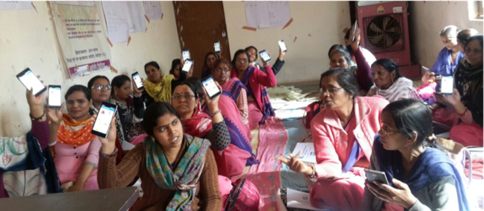
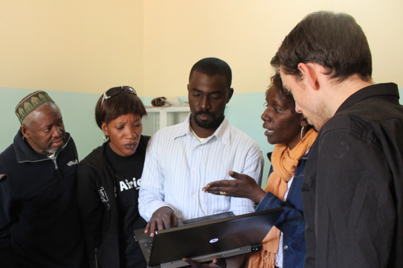

We have helped in the development of over 500 projects in more than sixty countries. Some were small pilots and others nationwide deployments, but each one has been a fantastic opportunity to do a lot of good.
Almost none of them went off without a hitch.
Looking at the many issues our partners have faced in the deployment of their programs over the years, we have learned a lot about common obstacles and how to mitigate them. These are the four pitfalls we see most often that can create problems for any mobile deployment. Learn from them to prepare your own team for success:
Pitfall 1: Treating QA As an Afterthought
Most organizations are happy to dedicate a large amount of time to requirements gathering and application design.
However, when it comes to quality assurance (QA) testing, organizations frequently underestimate the time it takes to comprehensively test their application. An app that doesn’t go through this process can have a confusing - or even broken - user interface (UI), which results not only in user frustration but also to the collection of bad data.
Setting aside ample time for QA testing can mean not only budgeting several weeks for testing, but also ensuring that no additional app changes are made during the QA period. Many times, we work with organizations who decide they want to add one final feature to their application or tweak certain questions during their QA phase. Inevitably, these changes do not make it through the entire QA process, and as soon as users get their hands on the app, it breaks.
To avoid this, we recommend freezing all app building and user feedback with a firm deadline before beginning the QA process. Then, after the initial process of QA, you can decide whether there are enough changes to be made to warrant an additional round of app building (before a final round of QA).
No matter what, your app building process should always be followed by a dedicated QA process to ensure everything you build operates as intended. Without it, those confusing, broken UIs will drive down both usage rates, user satisfaction, and ultimately, program effectiveness.

Pitfall 2: Training
In our early days of project deployments, Dimagi would train all project end users directly in how to use CommCare. Now that we work on much larger projects (including national-scale programs) and offer CommCare as a subscription for self-starters, we have started to see more layers between the people who build the application and those who use it.
In these situations, we realized that the more layers between the builders and the users, the worse the quality of training, and more importantly, the worse the data collection. This makes it vitally important to prepare materials or tools that will help instruct end users on how the app was meant to be employed.
For instance, paper guides, such as training manuals and checklists for both trainers and end users, can serve as a traditional source of information for their new form of collecting data. You might create pre- and post-training tests to ensure that trainers know what they need to cover and how well they covered it. You might even create a “how-to-use-this-app” module within the app itself, so users who are lost can go directly into the app to view text and videos about how it is meant to work.
Whatever your method of training, ensure that the intentions of the app builders are clearly conveyed to the trainers and users, be that through traditional paper forms or dedicated modules within the app.

Pitfall 3: Tech Support
Many organizations think the hardest part of a mobile deployment is the initial building and deployment of the app. They tend to underestimate how much time and energy it takes to maintain a mobile deployment and provide hardware and software troubleshooting/support for their end users.
One project we worked on deployed as a 50 user pilot with a single person on call for tech support. Within the first week, two users were forced to travel over two hours to the partner’s main office for troubleshooting support. When the program grew to 1,400 users, that single person on call was certainly not enough.
As programs start to scale, we recommend training workers at the lower levels of these programs in how to troubleshoot key issues. For example, the proximity of supervisors to end users makes them very well placed for this basic troubleshooting knowledge.
Using this sort of model, supervisors can triage issues in the field, ensuring most are solved locally, and only in extreme cases do devices or end users have to go to the project’s main office for support. Of course, this is only one of the many types of maintenance that you should prepare your data collection tool for in order to avoid high drop-offs in usage and functionality.

Pitfall 4: Balancing Scale and Complexity
We have learned the hard way that there is a balancing act between scale and complexity when you are deploying a mobile application. You can scale a simple app quickly and you can pilot and deploy a complex app, but you cannot scale a complex app quickly.
We have often had donors who are looking for a complex app and government organizations who want their apps deployed quickly. Pleasing both has almost never happened.
Talk early and often about the tradeoff between scale and complexity. All stakeholders should understand the ultimate goals and objectives of your project. There is a sliding scale between those two extremes, so before you begin to design your app, let alone deploy it, find the balance that satisfies all parties involved, and make your tradeoffs knowingly and intentionally.
You will surely face issues that do not fall within one of these four categories, but we can almost guarantee that you will also face some that do. Fortunately, all of these issues can be mitigated by planning ahead, so review your production timeline and include adequate time for QA, organize informed and thoughtful training sessions, train team members to handle common setbacks in app usage, and be in constant communication at the start of your program to make sure everyone is on the same page.
You won’t be able to avoid every issue - we’ve never seen a completely flawless program launch - but set yourself up for success by understanding some of the weak points that we have seen in program delivery in the hundreds of projects we’ve worked on. Good luck!